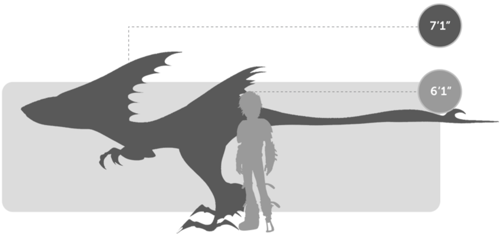
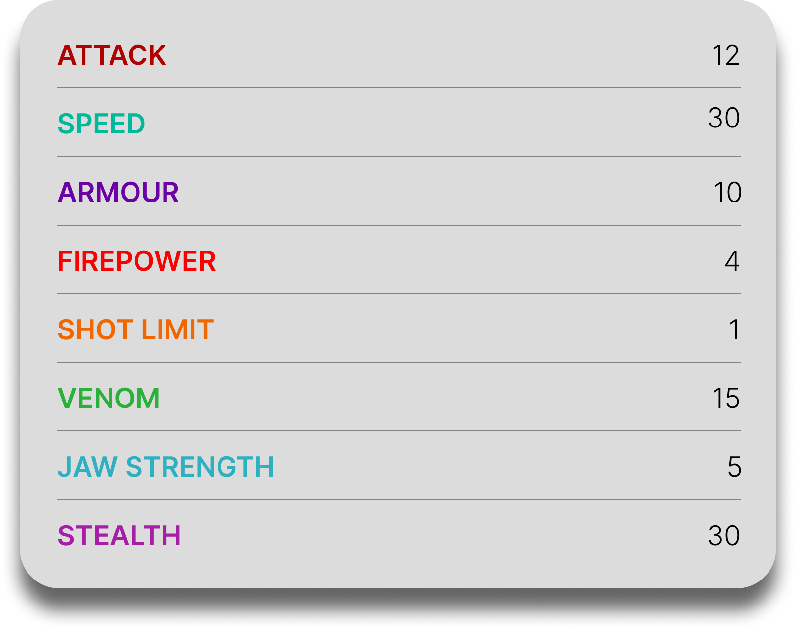

Speed Stinger
General Overview
The Speed Stinger is a small dragon belonging to the Sharp Class. Although it is flightless, it is one of the fastest dragons on land and one of the most dangerous pack hunters in the archipelago. Known for its incredible speed, venomous tail, and coordinated group attacks, the Speed Stinger relies on agility, stealth, and pack loyalty rather than brute force to overwhelm its prey.


Physical Appearance
- Body & Color: It has a sleek, theropod-like body, usually in green or aqua tones, with red eyes and a vivid red stinger at the tip of its tail.
- Head & Face: Its head is narrow and predatory, with small pupils, sail-like fins, and features that give it a sharp, reptilian appearance.
- Appendages: It has powerful hind legs built for sprinting, along with dexterous feet that allow it to maintain speed and grip on difficult surfaces.
- Wings & Tail: Although flightless, it still has a very small pair of vestigial wings, while its tail ends in a razor-sharp, venomous stinger used for fast and accurate attacks.
Abilities and Combat
- Paralyzing Sting: Its tail delivers a fast, highly accurate venomous strike capable of instantly paralyzing humans and dragons.
- Extreme Speed: It is one of the fastest dragons on land, able to sprint with incredible acceleration and chase down prey with ease.
- Pack Coordination: Speed Stingers fight in organized packs led by a single dominant leader, allowing them to plan and execute coordinated attacks.
- Night Vision: It has exceptional nocturnal eyesight, allowing it to move and hunt efficiently in darkness.
- Water Running: Some individuals have webbed feet that let them run across water for short distances.
- Stealth and Agility: It hides in shadows, strikes quickly, and can even run along walls or ceilings for limited periods.
Behavior and Personality
- Intelligence: It is highly intelligent and cunning, often compared to the velociraptor of the dragon world.
- Temperament: Speed Stingers are aggressive, hostile, and highly unpredictable when they believe they have the advantage.
- Behavior: They are nocturnal scavengers and hunters that stay hidden during the day and become active after sunset.
- Social Traits: They live in packs with a hive-like mindset, showing intense loyalty to their leader and to the group as a whole.
- Weakness: Without their leader, the pack becomes confused and far less effective.